Table of Contents
Resolution of encoding (CSC) conflicts
A common issue in synthesis of speed-independent circuits from Signal Transition Graphs (STGs) are encoding conflicts, a.k.a. Complete State Coding (CSC) conflicts. Detection and resolution of CSC conflicts is an important part of the design process.
What are CSC conflicts?
CSC conflicts arise when two semantically different (i.e. enabling different output or internal signals) reachable states have the same encoding, i.e. the same values of all the signals. For example, consider the following STG specifying the read phase of the VME bus controller.

One can see the conflicting states at the level of the state graph of this STG, which can be generated via the Conversion→Finite State Transducer (binary-encoded) [Petrify] menu, and is shown below (after manual layout). Note that the encoding of each state is given in its label (after '_') with the following order of signals: dsr, ldtack, d, dtack, lds.

The two highlighted states have the same encoding, 11001, but are semantically different: in one of them the circuit must produce d+ and is not allowed to produce lds-, and in the other the circuit must produce lds- and is not allowed to produce d+. Since the circuit can only 'see' the signal values but not the tokens in the STG, these two states are indistinguishable from its point of view, and so the specification is not directly implementable – one has first to resolve this CSC conflict by transforming the STG.
Automatic resolution of CSC conflicts
In most practical cases CSC conflicts can be resolved automatically, via the Tools→Encoding conflicts→Resolve CSC conflicts [Mpsat] or Tools→Encoding conflicts→Resolve CSC conflicts [Petrify] menu items. For the VME bus controller STG shown above, both MPSat and Petrify happen to generate essentially the same solution:
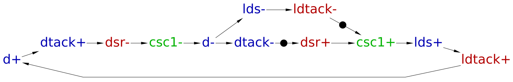
The state graph of this STG is shown below (after manual layout). Note that the binary encodings of the states have one extra bit now corresponding to the newly inserted signal (this is the last bit in the encodings). The two highlighted states correspond to the conflicted states of the original STG – one can see that now their encodings differ in the last bit and so the CSC conflict disappears. Intuitively, the newly inserted signal introduces extra memory into the circuit, helping it to track its current state and disambiguate the previously conflicted states.
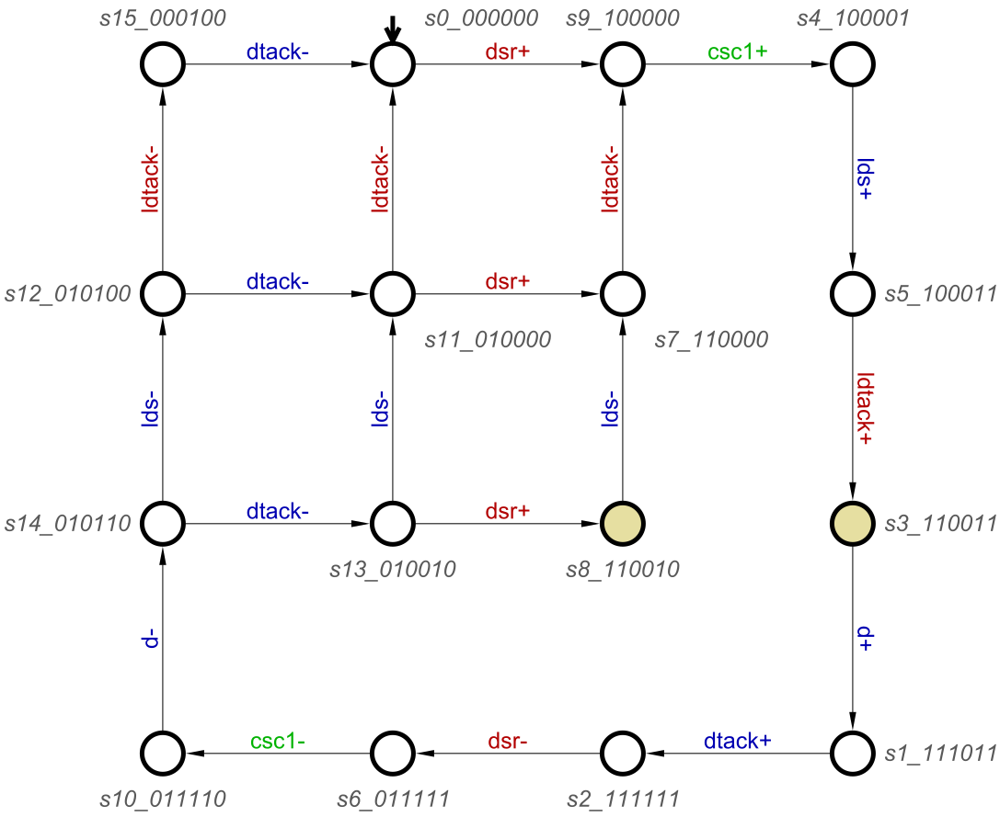
Once the encoding conflicts are resolved, several kinds of circuit implementations can be automatically synthesised by the Petrify or MPSat back-ends (via the Synthesis menu):
- complex-gate implementation;
- generalised C-element (gC) implementation;
- standard C implementation.
E.g. for the former, the following next-state functions for the output and internal signals are automatically derived:
[d] = csc1 ldtack; [dtack] = d; [lds] = d + csc1; [csc1] = dsr (ldtack' + csc1);
The total number of literals in the right-hand side of these equations is 8 – this intermediate metrics is often used for evaluating the quality of the CSC resolution process before technology mapping. The circuit corresponding to these equations is shown below (after manual layout). Note that the gate with feedback implements csc1, and that the implementation of dtack is a buffer gate – it's just a wire.

Exercise 1
Download the following STG from [1]: SRAM controller (MASTER). (9 KiB):
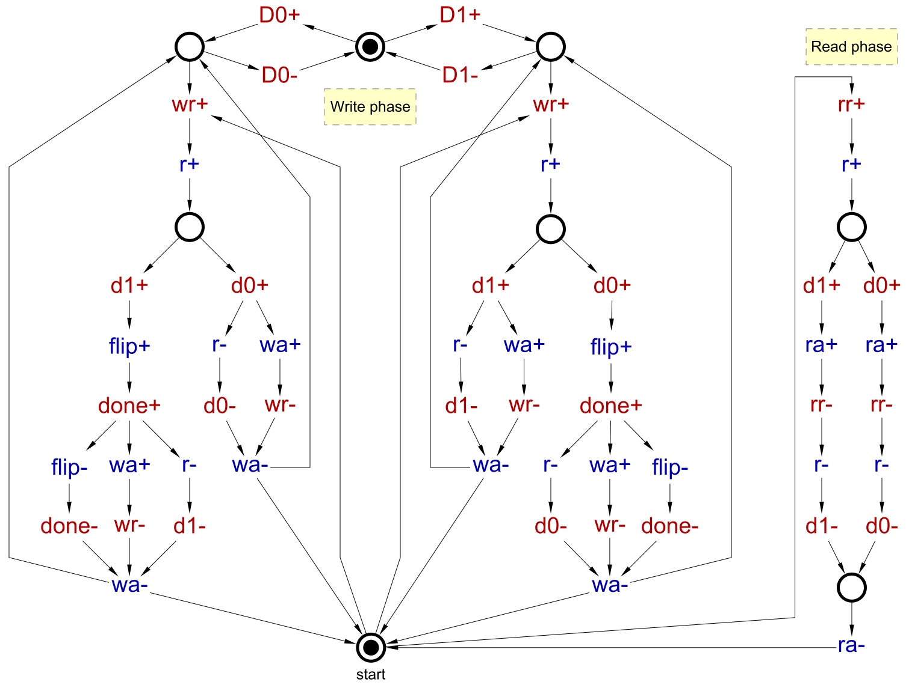
- Automatically resolve the encoding conflicts in it using the Tools→Encoding conflicts→Resolve CSC conflicts [MPSat] and Tools→Encoding conflicts→Resolve CSC conflicts [Petrify] menu items. Save the results as
sram-master-csc-mpsat.workandsram-master-csc-petrify.work. - Synthesise the complex-gate implementations of these two STGs, noting the number of literals in each case (can be found in the Output pane or using Tools→Statistics→Circuit Analysis menu item).
Manual resolution of CSC conflicts (if you cannot help it)
As explained above, the resolution of CSC conflicts is automated, and the tools generally do a good job. However, there are some rare situations when manual resolution is used, e.g.:
- for personal enlightenment you wish to learn about CSC conflicts and techniques that can be used for their resolution;
- you have a lot of time, and the process for you is more important than its outcome
 ;
; - automatic resolution failed, so you have no choice;
- you are in the process of inventing a new component that is relatively small and is likely to be highly reusable, so willing to invest considerable effort and time in optimising it as much as possible;
- you are an experienced designer, and have reasons to believe that some potentially dangerous transformations like concurrency reduction may improve your circuit so considerably that you are willing to take the risk of shooting yourself in a foot.
If you do not fall into any of the above categories, you should be content with automatic resolutions of encoding conflicts. Otherwise you are welcome to the shady world of tools' internals, with many dark corners, strange heuristics, dangerous transformations, and unsavoury hacks…
For manual resolution, the conflicts have to be
- detected – this is fully automated;
- visualised – two kinds of visualisation are explained below: at the level of state graphs (works only for toy examples) and at the level of STGs;
- resolved – several commonly used ways of resolving CSC conflicts are briefly explained below.
Visualisation of CSC conflicts
Workcraft supports two ways of visualising encoding conflicts:
- highlighting conflicting states in the state graph;
The former approach only works for toy examples where the state graph is small enough to fit on a screen and to be comprehensible for a human. However, for more realistic examples state graphs tend to be large as the number of reachable states is often exponential in the size of the STG, especially if the STG has a lot of concurrency (this is the well-known state space explosion problem a.k.a. state explosion problem). The recommended visualisation technique is based on conflict cores – it works directly with the STG and so is much more human-friendly.
Visualisation of CSC conflicts at the level of state graphs
An example of this kind of visualisation is shown above for the VME bus controller example. The idea is to highlight the conflicted states in the state graph with the same colour (i.e. each conflicted encoding gets its own colour). To build the state graph of the STG and highlight the conflicted states, use the Conversion→Finite State Transducer (binary-encoded) [Petrify] menu.
There are two main problems with this kind of visualisation:
- the state graph may be too large to be of any use for a human;
- even if the state graph is of moderate size, it is difficult to see how one can transform the original STG to resolve the conflicts.
To illustrate these problems, consider the following examples. The following STG specifies a 4-way paralleliser: in response to the parent handshake r / a it initiates four child handshakes in parallel:
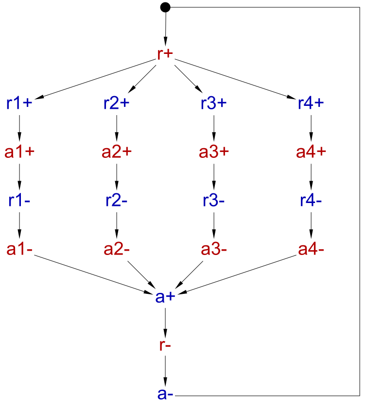
Though this STG is very small and comprehensible, due to high concurrency its state graph is large (628 states) and is of limited utility for humans:

The following STG specifies a part of an A2D converter [5].

The corresponding state graph is not particularly large, but there are several CSC conflicts and it is not straightforward by looking at it to understate the causes of these conflicts and to find transformations resolving them:

Visualisation of CSC conflicts at the level of STGs
An alternative and recommended method of visualising encoding conflicts is based on showing the conflict cores in the STG [2] [3] [4]. Consider the VME bus controller STG shown above. The two conflicted states can be reached from the initial state by the following two traces:
dsr+, lds+, ldtack+
dsr+, lds+, ldtack+, d+, dtack+, dsr-, d-, dtack-, dsr+
By taking the difference of two traces we get a set of transitions forming a conflict core shown below. To see it in Workcraft, use the Verification→Complete State Coding (all conflicts) [MPSat] menu and then select Show selected cores in the Tool controls panel.
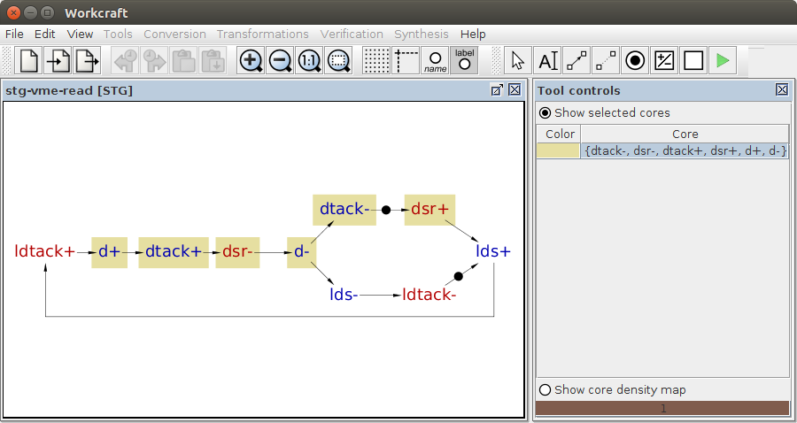
Note that this core has several important properties helping the user to understand the cause of the conflict and find ways to resolve it:
- the states (i.e. cuts in the STG) just before and just after the core are in encoding conflict;
- the numbers of
s+ands-transitions in the core are the same for each signalsas the states just before and just after the core have the same encoding; - if the transformation upsets this balance of signals in the core (e.g. csc+ is inserted somewhere inside the core and csc- is inserted somewhere outside the core) then the associated conflicts become resolved.
The core map for the 4-way paralleliser is as follows. Note that it is much more comprehensible than the state graph: Each concurrent branch has a single conflict core inside it, and one can resolve these cores e.g. by inserting the rising transitions of four new internal signals into these cores, and the corresponding falling transitions outside of these cores.
Each core is given a different colour. If there are several cores, it is possible to show any subset of them by selecting the required cores in the Tool controls panel.

The core map corresponding to the A2D controller example is shown below on the left. Note that in this case there are five cores, some of which overlap (and so some of the transitions are highlighted with several colours as they belong to several cores). Core overlaps can be exploited during the resolution process – by inserting csc+ into the overlap of several cores one can destroy these cores, killing several birds with one stone. Furthermore, one can insert csc- into some of the remaining cores, increasing thus the number of killed birds.
 and height map (right)")
When there are multiple overlapping cores, one can quickly identify the promising areas where a signal insertion (or some other transformation) would eliminate as many encoding conflicts as possible by considering the core density map – for the A2D controller example it is shown above on the right. The idea is to count how many cores a transition belongs to, and the higher this number is, the darker is the shade used to highlight this transition. The analogy is with a topographic map where darker shades show higher altitudes – the 'peaks' with the darkest shade are good areas where a single signal insertion can eliminate the maximum number of cores. E.g. in the A2D controller example the highest peak is formed by the transitions Laf+, Ar-, Lr- and Laf- that belong to the same four cores. Hence inserting csc+ somewhere in this peak eliminates these four cores. The remaining core can be also eliminated if csc- is inserted into it, i.e. all the encoding conflicts in this example can be resolved by a single signal insertion.
| 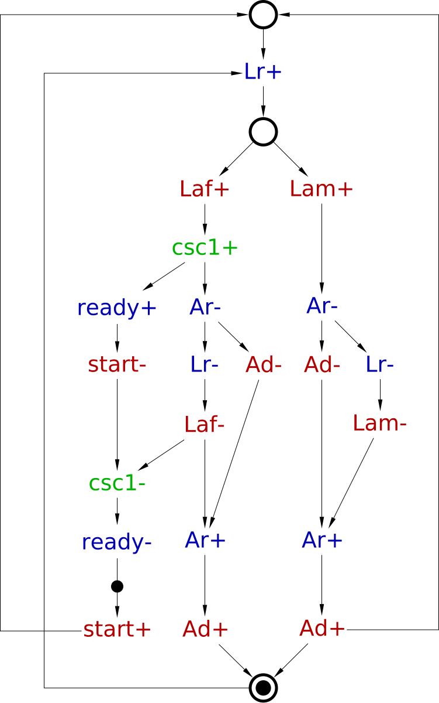 |
| MPSat's solution |
 |
| Petrify's solution |
The above STGs show two alternative signal insertions resolving all the conflicts with a single new internal signal in the A2D converter. They were derived automatically by the MPSat and Petrify back-ends, accessible via the Tools→Encoding conflicts→Resolve CSC conflicts [MPSat] and Tools→Encoding conflicts→Resolve CSC conflicts [Petrify] menu items. The complex-gate implementations corresponding to the resulting two STGs are as follows:
// MPSat: 14 literals [Ar] = (Laf' + csc1') (Ad' + Ar) Lam' [Lr] = Ar (Ad start csc1' + Lr) [ready] = csc1 [csc1] = start csc1 + Laf
// Petrify: 15 literals [Ar] = Laf' Lam' (Ar + Ad'); [Lr] = csc0' (Ad Ar start + Laf); [ready] = csc0 + Laf; [csc0] = Ar' Laf + csc0 start;
Note that MPSat's solution is smaller, but Petrify's solution has more concurrency.
MPSat and Petrify are different back-end tools that perform the actual resolution of CSC conflicts. These tools use different methods and somewhat different cost functions, so it makes sense to try them both and then choose the solution that better fits the designer's goals (in terms of area, performance, etc.).
Transformations for resolving encoding conflicts
Below several ways of resolving encoding conflicts are outlined. They are supported by tools, with various levels of automation. It is difficult to beat the tools on their own field, as they employ advanced techniques and use complicated cost functions that would be difficult for humans to compute. However, the human designer has information and capabilities that are not available to the tools, in particular the high-level understanding of the design, the possibility to change the contract between the circuit and the environment (and re-design the latter if required), etc. So you need to think “outside the box” to beat the tools.
Signal insertion
Severity level: Paracetamol
New internal signals can be added to the STG in such a way that its external behaviour (i.e. the 'contract' with the environment) stays unchanged. These internal signals add memory to the circuit helping it to trace its current state. The encodings of the states get longer due to the new signals, which helps to disambiguate the states that previously had the same encodings.
When inserting a new internal signal, say csc, one has to make sure that:
- no input is directly delayed (triggered) by the transitions of
csc, as this is not implementable (the environment is oblivious to internal signals); - the consistency is not violated, i.e. the rising and falling edges of
cscalternate in every execution, always starting from the same edge; - the output persistency is not violated, i.e.
cscmust not disable or be disabled by any other signal; cscresolves some encoding conflicts;- when inserting a transition, say
csc-, outside the core, make sure that it is not adjacent to the core, i.e. there are some other transitions separating the core fromcsc-(otherwise the core will suckcsc-in and re-appear with bothcsc+andcsc-inside it).
In addition to these, one should try to heuristically optimise the final implementation, as the way the signals are inserted affects the quality of the resulting circuit very significantly. Note, however, that “the quality of the circuit” cannot be defined at this point, as an STG with CSC conflicts is not directly implementable. However, various heuristics for signal insertions are known to be beneficial, e.g.:
- increasing the number of resolved cores;
- reducing the number of transitions of
csc; - sequential insertions of transitions of
cscoften result in a smaller circuit with less concurrency, whereas concurrent insertions result in a more concurrent operation at the expense of the area (it is important to note that this more concurrent operation does not necessarily improve the performance of the circuit, as the more complicated implementation imposes additional overheads); - reducing the number of signals triggering or triggered by
cscoften leads to a simpler implementation ofcscand those signals, as the triggering signals are always in the support of the gate implementing the triggered signal (e.g. one can try replacing one or more triggers of some signal bycsc, rather than addingcscas an extra trigger); - locking
cscwith some existing signals (two signals are called locked if their transitions alternate in every execution).
Examples and techniques for signal insertion have already been presented above. Considerations when using signal insertion:
- behaviour is preserved and so the contract with the environment stays the same
 ;
; - inserted signals have to be implemented, i.e. the logic becomes more complicated
 .
.
When trying to resolve encoding conflicts by signal insertion you will be competing with the tools on their own field (as the contract with the environment is unchanged, no insight that is not already available to the tool is exploited), and so are unlikely to significantly improve the automatically generated solution. As an example, consider the (very simple) VME bus controller STG above. MPSat backend reports 18 (!) different ways of resolving the encoding conflict by inserting a single signal, and heuristically chooses the best one. How many of these can you find? For more complicated examples the number of ways to insert a signal grows very fast, and the tool will have an edge over the human designer.
Exercise 2
For the STG in Exercise 1:
- Visualise the conflicts using the Verification→Complete State Coding (all cores) [MPSat] menu item.
- Meditate on the cores map and the core density map until you understand the causes of the encoding conflicts.
- Manually resolve the encoding conflicts by signal insertion as explained above. Make sure that the essential STG correctness properties (consistency, deadlock freeness, input properness, output persistency, and mutex implementability) are still satisfied (these can be checked via Verification→Consistency, deadlock freeness, input properness, output persistency, and mutex implementability (reuse unfolding) [MPSat] menu item).
- After all the conflicts are resolved, synthesise the complex-gate implementation using the Synthesis→Complex gate [MPSat] menu item.
- Compare the number of literals in your solution with those in Exercise 1. If yours is significantly worse, repeat the previous two steps inserting signals differently, until you are either happy with your solution or frustrated and cannot be bothered any more.
Butterfly construction
Occasionally the STG has a pair of very loosely coupled handshakes, which result in difficult to resolve CSC conflicts. In such a case, one can use concurrency reduction (see below) to solve the CSC conflicts (or at least to reduce the number of conflict cores), but it is not always possible (e.g. the high concurrency is required, and so the handshakes cannot be coupled any tighter). Consider the following STG (a.k.a. ‘butterfly’):

It should be viewed as a template, i.e. in practice these handshakes would be loaded with some useful work. The difficulty here is that there are very few places where signal insertion is possible (note that one must not delay inputs). The automatic signal insertion is likely to either fail or yield a bad solution for such examples, as the tools insert signals one-by-one, whereas the recommended solution below depends on the interplay of a pair of internal signals:
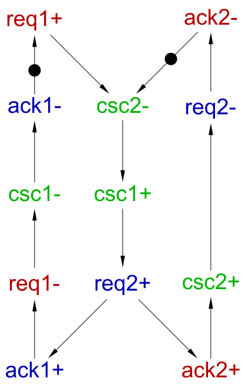
Again, this is just a template solution that can be applied when you have loosely coupled handshakes and concurrency reduction is not applicable for some reason.
Concurrency reduction
Severity level: Antibiotic
Another commonly used transformation for resolving CSC conflicts is concurrency reduction (CR) [6]. The idea is to sequentialise some concurrent transitions in the STG by introducing new arcs, in such a way that some of the conflicted states become unreachable. This may or may not decrease the performance: note that the loss of concurrency may be more than offset by simpler logic in some cases.
This transformation may change the behaviour of the STG in significant ways, and break the contract with the environment! It is up to the designer to ensure that the modified STG still makes sense, and that the environment either can cope with the changed contract or is re-designed for the modified contract – the tools do not have sufficient information / capability to make these kinds of decisions.
A possible CR resolving the encoding conflict in the VME bus controller is shown below. The amber arc orders two previously concurrent STG transitions, pulling lds- into the core, which breaks the balance and destroys the core.
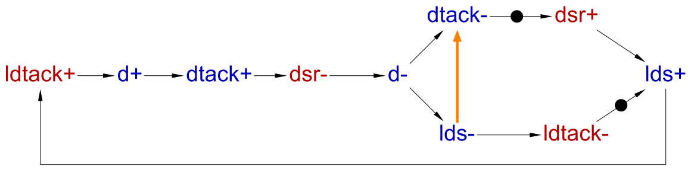
The semantics of CR arcs coincides with that of usual arcs, but it is convenient for the designer to see which arcs were original and which were added later for various technical reasons, so CR arcs are highlighted as thick amber arcs.
The state graph after this CR is shown below: Two of the formerly reachable states have become unreachable (they are faded out in the picture). One of these states used to be involved in an encoding conflict, and so eliminating this state resolves the conflict.
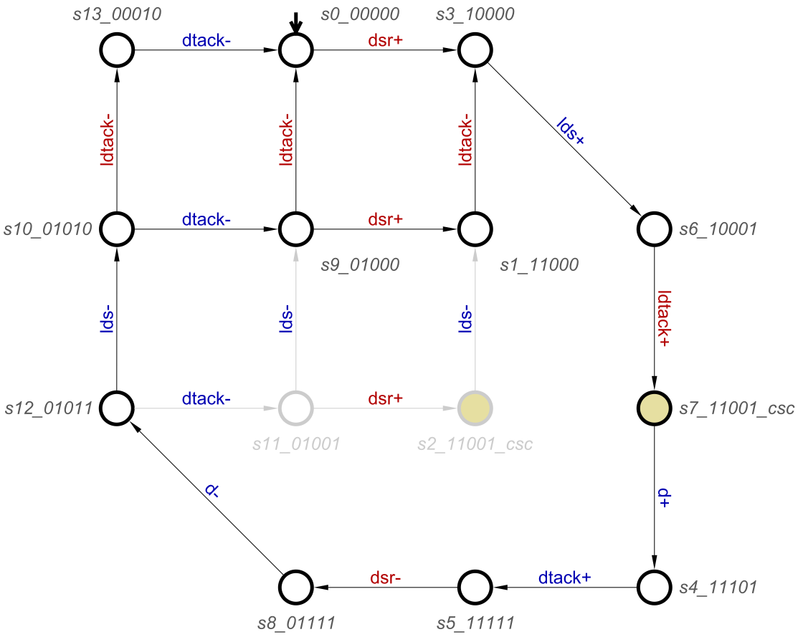
The resulting complex-gate implementation has 10 literals, which happens to be worse than the solution obtained using signal insertion.
[d] = ldtack dsr lds; [dtack] = dtack lds + d; [lds] = dsr (lds + ldtack') + d;
However, often CR results in smaller circuits than signal insertion as for the latter the newly inserted signals have to be implemented.
We distinguish a special kind of innocuous CRs, which do not introduce any extra causal dependencies on the inputs, i.e. if the original STG could produce some output at some state, the modified STG in the corresponding state will be able to produce this output too, perhaps after firing some other outputs first, but without waiting for any inputs from the environment. For example, suppose the original STG at some state could produce outputs o1 and o2 concurrently, i.e. in any order, and the applied CR fixes this order to o1 → o2. Since the original environment was prepared to receive these outputs in any order, fixing the order will do no harm. In other words, innocuous CRs modify the contract with the environment in a safe way: they do not make any extra assumptions about the environment, but provide more guarantees to it (about the order of transitions). Hence, the modified STG will work correctly in any environment in which the original STG would have worked correctly.
All the other CRs are called risky – they require extra assumptions about the environment and have to be vetted by both the designer of the STG and the designer of the environment.
For example, the CR used in the VME bus controller STG above is innocuous: since the environment formerly was prepared to receive lds- and dtack- in any order, fixing this order to lds- → dtack- is harmless. An alternative (and highly problematic!) way to apply CR to resolve the conflict in VME bus controller is shown below.
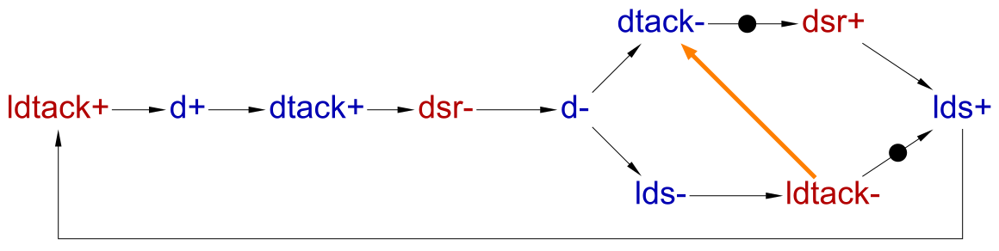
This CR is risky (i.e. not innocuous according to the above definition) as it changes the contract with the environment in a dangerous way: the modified STG waits for the environment to supply ldtack- before it can produce dtack-. If the environment in turn waits for dtack- before sending ldtack- (e.g. because the designer next-door used a risky CR to resolve some encoding conflicts in the environment without checking with you  ), a deadlock ensues.
), a deadlock ensues.
However, even if no deadlock has been introduced, there is a higher-level problem with this CR, which cannot be automatically detected even in principle: The applied CR pulls both lds- and ldtack- into the core, which completely sequentialises the behaviour (the transitions become totally ordered) and destroys the VME bus controller's purpose in life (which is to ensure concurrent operation of the bus and the device interacting with the controller).
The complex-gate implementation below has only 7 literals, which is smaller than any of the implementations above, but, as explained, it is totally useless (other then as an illustration of CR pitfalls) and even dangerous due to the subtlety of the problem: It does look attractive and passes all the formal verification checks – so it is very easy even for an experienced designer to be seduced and damned (along with innocent colleagues) to many hours of hard labour trying to track down the cause of performance deterioration in the overall system to this pesky little circuit. Thus be on your guard against risky CRs, and firmly reject them unless explicitly approved by your priest line manager!
[d] = dsr ldtack; [dtack] = dtack ldtack + d; [lds] = d + dsr;
The following two schematic pictures show how to resolve encoding conflicts using CRs [3] [4]. The idea is to pull one or more existing transitions into the core, upsetting its balance and thus eliminating it.

In the presence of choices, the CRs may be more complicated, as illustrated below [3] [4]. An extra place may be necessary in such a case to handle all the branches of the choice to avoid violating the consistency of the STG. (This case is mentioned here for completeness, but we do not use such CRs in the rest of the tutorial.)

CRs can be used (along with signal insertions) for automatic resolution of CSC conflicts – for that you need to provide an extra command line parameter -r to MPSat via Edit→Preferences…→MPSat verification→Additional parameters. The resulting automatic solution has to be carefully reviewed by the designer, as MPSat does not discriminate between innocuous and risky CRs, and aggressively uses those that are most likely to reduce the number of literals; e.g. for the VME bus controller example it picks the risky CR that fully sequentialises the behaviour and violates the high-level purpose of the design.
Four alternative ways to use CR to resolve the encoding conflicts in the A2D example are shown below – only one (any) of the four amber arcs is added. The reason any of these CRs resolves all the conflicts is interesting:
ready+and perhaps alsostart-are pulled into the overlap of four cores (forming the highest peak) and destroy these four cores;- at the same time,
Lr-,Laf-, and perhapsAr-are pulled into the remaining core destroying it too.
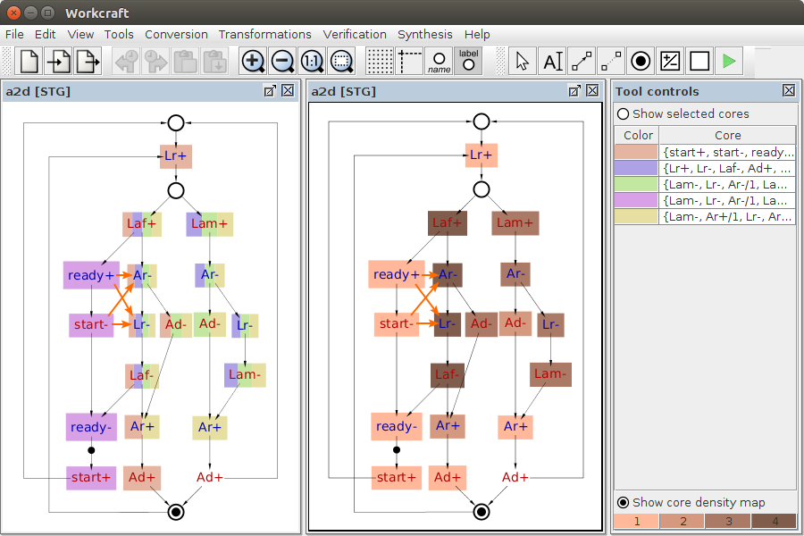
// innocuous CR: ready+ -> Ar-; 14 literals [Ar] = (Lam' ready' + Laf' ready) (Ar + Ad'); [Lr] = Ar (Ad ready' start + Laf); [ready] = ready start + Laf;
// innocuous CR: ready+ -> Lr-; 14 literals [Ar] = Laf' Lam' (Ar + Ad'); [Lr] = ready' (Ar Ad start + Laf) + Laf Ar; [ready] = ready start + Laf;
// risky CR: start- -> Ar-; 11 literals [Ar] = (Laf' start' + Lam' start) (Ar + Ad'); [Lr] = Ar (start Ad + Laf); [ready] = Laf;
// risky CR: start- -> Lr-; 11 literals [Ar] = Laf' Lam' (Ar + Ad'); [Lr] = start (Ad Ar + Laf) + Laf Ar; [ready] = Laf;
The CRs ready+ → Ar- and ready+ → Lr- are innocuous, and the corresponding complex-gate implementations both have 14 literals – which happens to be the same as MPSat's automatic resolution by signal insertion.
The complex-gate implementations for the CRs start- → Ar- and start- → Lr- are much smaller (only 11 literals) and so advantageous from the area point of view. However, in contrast to the previous two CRs, these CRs are risky: they rely on the environment producing start- soon after ready+, as otherwise many transitions get delayed. Hence these CRs have to be carefully considered by the human designer and agreed with the environment's designer. In this particular case, Alex Yakovlev (one of the designers of this A2D controller) explained that:
start/readyis an “external” handshake to the user of the A2D controller; a ubiquitous component like an A2D converter should not rely on the environment to sendstart-fast;start-may be controlled by a clock, and so be very slow;- there are situations, however, when
start-is fast.
When choosing a concurrency reduction, one has to make sure that:
- no input is directly delayed by the new arc (this will definitely change the contract with the environment, expecting it to wait for some transitions before delivering this input);
- the added arc cannot accumulate unbounded number of tokens, i.e. the STG remains bounded;
- the output persistency is not violated;
- no deadlocks have been introduced (e.g. if risky CRs are used both to simplify the circuit and, independently, the environment then all the added arcs may accidentally form a loop leading to a deadlock due to circular waiting);
- the concurrency reduction resolves some of the CSC conflicts.
(Note that the consistency cannot be violated by concurrency reduction, as it can only restrict the behaviour of the STG, i.e. no new traces can be introduced.) One should also prefer innocuous CRs, and use the risky ones only if there is a very compelling reason to do so, and remember to vet these with the designer of the environment!
In addition to these, one should try to heuristically optimise the final implementation, using similar heuristics to those explained above for signal insertion. In particular, one should try not to introduce new signal triggers if at all possible.
Considerations when using concurrency reduction:
- no new signals to implement;
- reduced state graph and so more don't-cares in minimisation tables, which may result in a better implementation;
- risky CRs change the behaviour in significant ways, breaking the contract with the environment;
- risky CRs can introduce deadlocks;
- even when no deadlocks are introduced, risky CRs may drastically deteriorate the performance due to sequentialisation without the designer realising this (cf. the latter concurrency reduction in VME bus controller example above).
CRs can be used for simplifying the logic, even when there are no encoding conflicts. E.g. if several concurrent outputs are triggered by the same transition and have no other triggers, one can try various possible innocuous CRs between them to simplify the logic. E.g. in the VME bus controller STG above, after the conflicts have been resolved by inserting a new signal csc, d- is the only trigger of concurrent output transitions dtack- and lds-, so one can try innocuous CRs dtack- → lds- and lds-→dtack- and see if any of them improves the circuit.
Exercise 3
For the STG in Exercise 1 above:
- Manually resolve the encoding conflicts by concurrency reduction:
- Think which events can be pulled into the cores to break the balance.
- Use only innocuous CRs, as this tutorial does not provide sufficient information about the environment of this STG to vet risky CRs.
- Try to reduce the number of signal triggers – this is likely to result in a smaller complex-gate implementation.
- Do not forget to highlight the CRs by making the corresponding arcs amber and thick (with bigger arrowheads) by editing the properties of the corresponding arcs in the Property editor.
- Do not forget to verify the modified STG as explained in Exercise 2.
- Once all the encoding conflicts are resolved, synthesise the complex-gate implementation and compare the number of literals with that in the solutions to previous exercises.
- Even after the encoding conflicts are resolved, use more innocuous CRs to improve the number of literals in the complex-gate implementation. You should be able to get a solution with 23 literals without much effort. The number of literals can be found towards the end in the Output pane after the complex-gate synthesis has been performed.
Transition reordering
Severity level: Antibiotic
Consider the following STG, where the intention is to execute the r / a handshake on the output port in response to a handshake on one of the input ports (either r1 / a1 or r2 / a2). The input handshakes are assumed to be mutually exclusive, and a new input request (either r1+ or r2+) is allowed to arrive while the output handshake is still in progress.
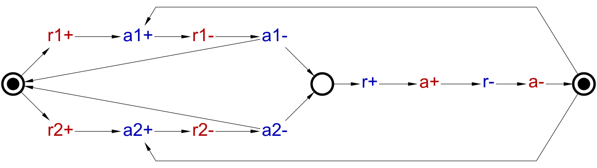
This STG has a CSC conflict between the initial state and the state reached when either input handshake is complete. Since there is very little concurrency, concurrency reduction cannot be used to resolve this conflict. It is possible to resolve the conflict using signal insertion in the normal way, but this will lead to area and latency overheads due to the necessity to implement the inserted signal, as explained above.
Often there is some flexibility in the order of signals, in particular if four-phase handshakes are involved: Usually only the rising edges of request and acknowledgement are used for communicating, and the falling edges are not meaningful (other than returning the signals back to zero). If this is the case, there is some flexibility in positioning the corresponding transitions in the STG, and this flexibility can be exploited for resolving CSC conflicts and/or improving the quality of the circuit in terms of area and latency.
Consider the alternative specification where the falling edges of the input handshakes are concurrent to the rising edges of the output handshake, i.e. the input and output handshakes now overlap in time:
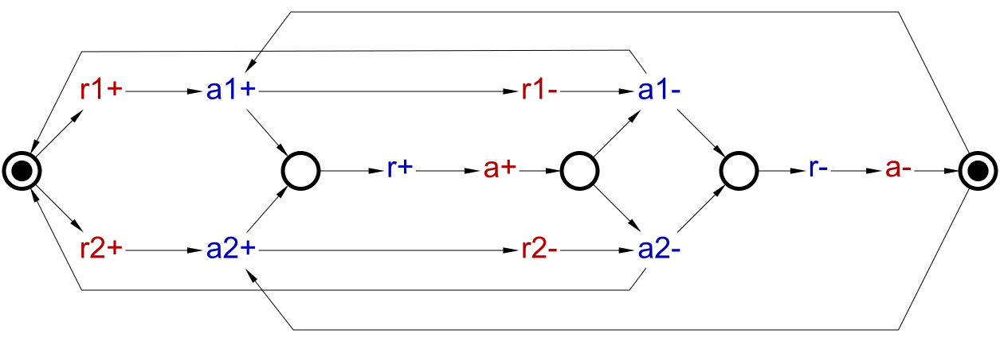
Of course, this transformation changes the contract with the environment, and so one has to be carefull when introducing it, in particular this should be agreed with the designer of the environment. However, if it is indeed possible to use this STG, it has several advantages:
- The active phase of the output handshake no longer has to wait for an input handshake to complete (removing
r1- –> a1-orr2- –> a2-from the critical path), which may significantly reduce the latency of the circuit; - There are no CSC conflicts any more, hence no need to insert and implement any new signals;
- Now the input and output handshakes are partially ‘locked’ with each other (as explained above, locking is a good heuristic for simplifying the resulting circuit).
Indeed, the circuit synthesised from this STG is rather simple and natural:
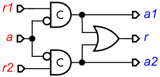
Conceptually, such designs can be obtained using the methodology similar to the one described in [6]. As an example of its use, consider the STG below, that is equivalent to the above design after transition reordering. First, the transitions of the falling edges of signals in each four-phase handshake can be made concurrent to every transition of every signal exept those participating in this handshake; that is, handshakes are represented by disjoint four transitions cycles – there are three such cycles in the STG below. This STG expresses the maximal possible behaviour obeying the hanshake protocol – all the ports concurrently and independently execute handshakes. Then the required protocol and interactions between input and output ports are modelled by introducing some places and arcs in this STG (thus restricting its behaviour). In this particular case, a new place expressing a choice between r1+ or r2+ is added and appropriately connected to the transitions of the input handshakes so that to make them mutually exclusive. Furthermore, two places are added and appropriately connected to express the triggering relation between either a1+ or a2+ and r+, and between a- and either a1+ or a2+. Then concurrency reduction for the falling edges is used for optimisation purposes – there are multiple possibilities, and the one shown by amber places and arcs results in an STG equivalent to the above design.
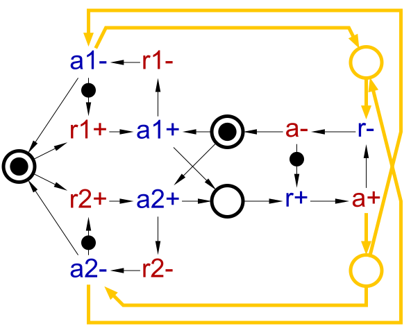
Considerations when using transition reordering:
- no new signals to implement;
- potential improvements in the latency due to removing falling edges from the critical path;
- potential improvements in the quality of the circuit due to more locking between signals, which is a good heuristic for reducing the logic complexity;
- the behaviour may change in significant ways, breaking the contract with the environment;
- need to re-design the STG, often manually (this can be alleviated to some degree, e.g. Petrify backend allows the user to declare some signals as having ‘free return to zero’, and the tool then automatically inserts the falling transitions with the view to obtain a consistent STG with a (heuristically) good implementation; unfortunately this functionality is not available from Workcraft front-end yet);
Exercise 4
Download the following STG, which is a 2-way paralleliser similar to the one considered above: 2-way paralleliser. (3 KiB):
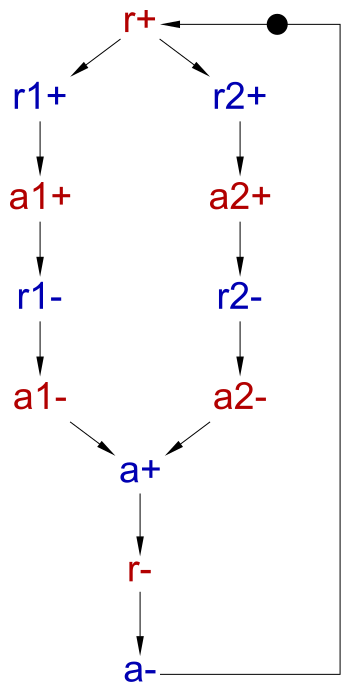
Assuming that only the positive signal edges are meaningful, resolve the CSC conflicts in this STG using transition reordering. Synthesise the mapped implementation of this STG. It is possible to design this circuit using just a C-element and a couple of buffers (implemented as wires); if your implementation is more complicated then try an alternative reordering of transitions.
Making extra inputs available
Severity level: Antibiotic
It can happen that including extra input signals from the environment, which are not strictly necessary for implementing the STG, helps to resolve encoding conflicts. This requires restructuring the STG in major ways. This technique is currently underexplored, in particular there are no clear guidelines on how to choose the signals that need to be included, other than appealing to the designer's “understanding of the system” and “creativity”. For small systems one can try to include all (or as many as possible) signals from the environment and see whether the complex-gate implementations becomes simpler and which of the newly included signals occur in the equations. In particular, if the environment (or a part thereof) is specified by STGs, one can compose all or some of them with the STG specifying the circuit (Tools→Composition→Parallel composition [PComp] menu item) and try to synthesise the composed STG: it may happen that the implementations of some of the signals become simpler, and one can find useful signals by examining the equations. Note however that the composed STG may be large and difficult to synthesise.
Consider the following STG specifying a part of an SRAM controller [1].
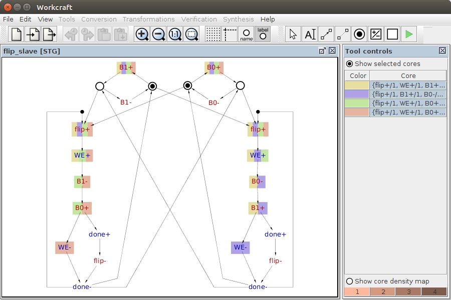
Automatic resolution inserts two new internal signals and yields the following complex-gate implementation with 18 literals:
[WE] = B0' csc1' + B1' csc0'; [done] = B0 csc1' + B1 csc0' + WE flip'; [csc0] = B0' csc0 + csc1' + flip'; [csc1] = B1' csc1 + csc0' + flip';
Alternatively, one can resolve some of the conflicts using innocuous CRs as shown below:
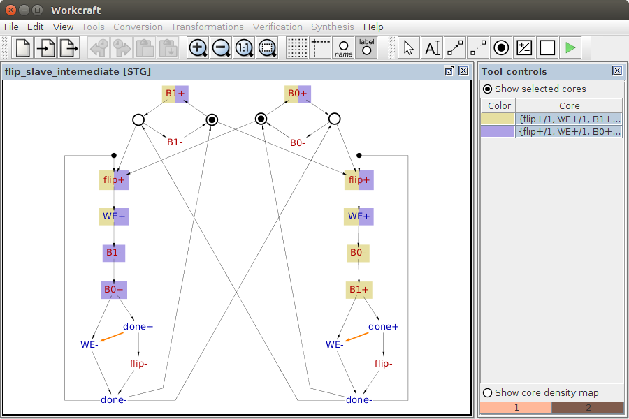
The above STG still has some encoding conflicts, but they can be resolved by inserting a single signal, yielding the following complex-gate implementation with 18 literals:
[WE] = done' (B1' flip + csc0' + WE); [done] = WE (B1 csc0 + done) + B0 csc0' + flip done; [csc0] = csc0 (WE + B0) + done + flip';
However, by vigorously applying “understanding of the system” and “creativity”, the designers of this SRAM controller observed that two signals in the environment, D0 and D1, can help the implementation to trace its current state and get rid of the encoding conflicts (in fact, any of these signals would have been sufficient, but it is better to include them both for the reasons explained below). The STG had to be manually restructured to include these two signals:
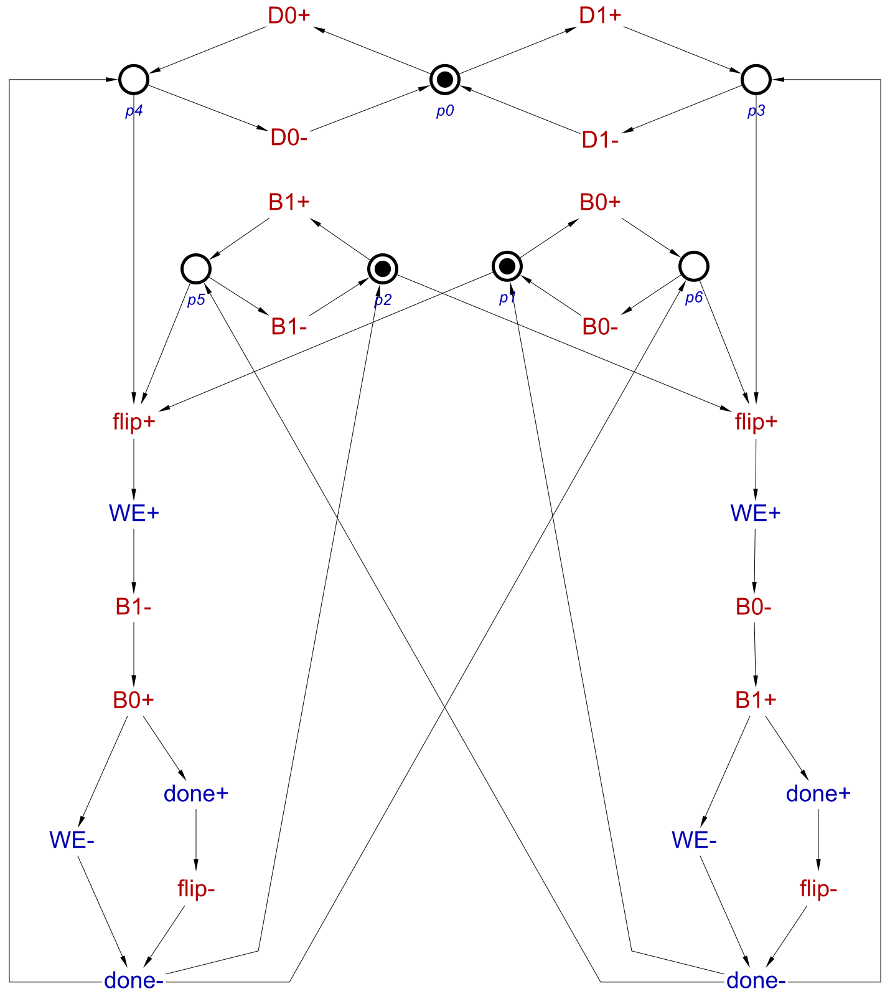
This STG is free from encoding conflicts, and yields the following implementation with 11 literals:
[WE] = flip (D0' B1' + B0' D0); [done] = (WE + flip) (D0 + B1) (B0 + D0');
Furthermore, one can simplify this implementation by applying two innocuous CRs as shown below. Note that these CRs are used not for conflict resolution, but for simplifying the implementation to help with subsequent technology mapping.
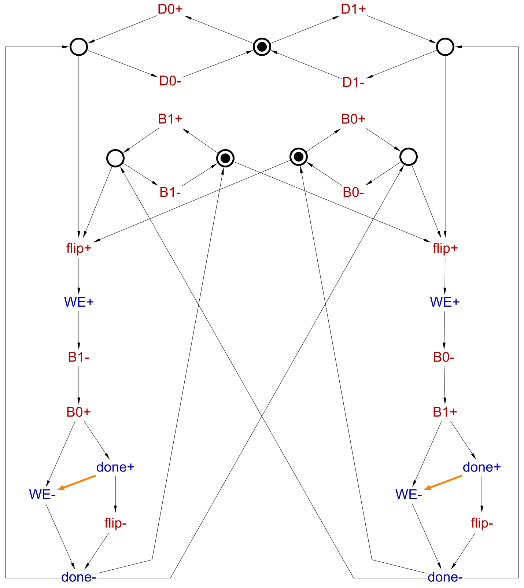
The resulting complex-gate implementation has only 8 literals:
[WE] = done' flip; [done] = (WE + flip) (D0 + B1) (B0 + D0');
Note that D1 is not used in this implementation. However, one can deploy it instead of D0', getting rid of the inversion that is likely to be finally mapped to an inverter with a timing assumption on its delay:
[WE] = done' flip; [done] = (WE + flip) (D0 + B1) (B0 + D1);
Note that this manual modification of the circuit has to be formally verified against the STG using Verification→Conformation, deadlock freeness, and output persistency (reuse unfolding) [MPSat] menu item.
Considerations when adding extra inputs:
- no new signals to implement – the extra signals are already implemented in the environment;
- not clear how to choose the new inputs;
- need to re-design the STG, often manually, changing the contract with the environment.
Relative timing assumptions
Severity level: 
Timing assumptions offer the designer unlimited opportunities to shoot oneself in a foot.
Intuitively, Relative Timing Assumptions (RTAs) state, “This transition will fire faster than that one” (see Chapter 7 of [7] – much of the material below comes from there). The difference from Absolute Timing Assumptions (ATAs) is that no specific delays (or intervals thereof) of events are assumed – just assumptions about the order of firing of concurrent transitions are made.
As an example, consider the VME bus controller STG. If the environment is known to be slow and dsr+ will definitely arrive after lds- fires (or this can be enforced by transistor sizing, etc.), one can synthesise the circuit with this assumption taken into account. In the picture below this RTA is illustrated by a red arc.

In contrast to concurrency reduction arcs, which are just regular STG arcs, RTA arcs have very different semantics. In particular, they do not add any triggers to their target transitions. Moreover, an arc's target can be a transition of an input signal, which was not possible for concurrency reductions.
The conventional state graphs can no longer adequately express the semantics of STGs with RTAs, and an extended formalism, called lazy transition systems, is explained in [7]. The lazy transition system for the above STG is as follows. Note that due to the RTA one of the states involved in the CSC conflict has become unreachable, and the conflict has disappeared. The difference from the traditional state graphs is that the firing region of a signal can be a proper subset of its enabling region, i.e. there may be states where a signal is enabled but cannot fire due to timing. (In traditional state graphs the enabling and firing regions are always the same, and so there is no need to distinguish between them.) For example, dsr+ is enabled in states s0_00000, s9_01000, and s11_01001, but can only fire in the former two states due to the RTA. The dashed arc originating in s11_01001 is called lazy and can never be taken (but it cannot be dropped, as it prevents lds- becoming a trigger of dsr+, which would change the semantics). Lazy arcs do not have target states (and do not need them as they are never taken); in this example state s2_11001_csc is unreachable and so is not even a part of the lazy transition system.
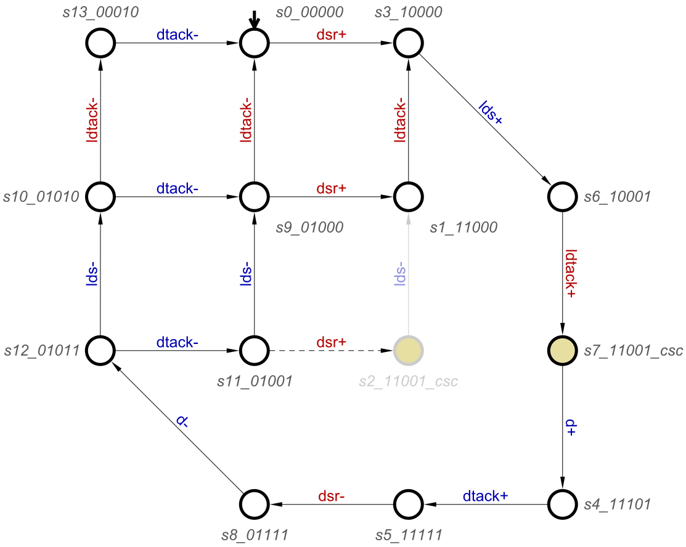
Examples of common RTAs:
- Detaching an input ‘bubble’ of a gate as an actual inverter. This is usually ok, provided that the maximum delay of an inverter is smaller than the minimum delay of any other gate and this inverter is placed next to the gate (avoiding thus a wire delay). Note that this imposes constraints on placing and routing. Unfortunately, the logic synthesis and technology mapping procedures often introduce such inverters with RTAs (there are good technical reasons for that). Note that in contrast to input bubbles, detaching an output ‘bubble’ does not break speed-independence and thus does not require any RTAs.
- “I know that my environment is slow” – this is often the case (with appropriate constraints on placing and routing), but one must be careful:
- the environment is often just another part of the circuit, and can be very fast;
- the environment may be changed without your knowledge by the designer next-door (as explained above for concurrency reductions, but the effects become much more subtle now);
- the delays in the environment may be significantly affected by all sorts of variations, like voltage, temperature, etc.
- “Three gates are always slower than one in my technology library”. This is usually ok, but one has to be careful with wire delays, and impose appropriate constraints on placing and routing.
The rational for preferring RTAs over ATAs is that the precise timing is not known at this stage:
- STG specifications are often incomplete, e.g. internal signals need to be inserted to resolve CSC conflicts or break up large complex-gates to map them to the gates available in the given library.
- Even after adding such signals, the precise absolute timing information is not available until technology mapping is complete. This leads to a chicken-and-egg problem: for efficiency, synthesis needs delay bounds, but delay bounds are unknown until synthesis is completed. In timed synthesis this problem is solved by iterating delay guessing and synthesis without guarantee of convergence.
- Synthesis flows usually include transistor or gate sizing, buffer insertion and selection of various parameters like threshold voltage. A netlist can be sized differently depending on a given set of constraints, and the resulting delays may differ by an order of magnitude depending on the selected sizes and parameters.
- Placement and routing may further change delays.
Note that much of the above applies not just to ATAs but to RTAs too; however, RTAs are generally much easier to satisfy after logic synthesis than ATAs. RTAs are also less fragile than ATAs as gates' delays often respond to some kinds of variation (e.g. temperature or voltage) in a similar way.
The synthesis flow with RTAs follows the paradigm, assume and, if useful, guarantee:
- Heuristically guess a set of RTAs.
- Synthesise the circuit under these RTAs.
- Derive a subset of RTAs sufficient to guarantee the correctness of this circuit (some of the original RTAs may happen to be redundant for this particular circuit).
- Perform transistor sizing and parameter selection to satisfy this subset of constraints.
- If the latter is impossible, select a less stringent set of RTAs and try again.
Though RTAs are less fragile than ATAs, they do break the speed-independence of the circuit. This introduces a number of problems, in particular:
- It is VERY easy to make a mistake. Such mistakes are often almost impossible to catch during simulation, as they would happen only in a narrow range of delays of inputs and other parameters like temperature, voltage, etc.
- Even if the circuit is correct, it is much less robust to all sorts of variations, like temperature, manufacturing, voltage, etc.
- RTAs are fragile and have to be re-checked every time even a minor modification is applied to the circuit.
- Most of the synthesis and verification flow for the speed-independent circuits implemented in Workcraft will not work for circuits with RTAs.
RTAs are supported by the Petrify back-end, and one can use them by exporting an STG from Workcraft via File→Export→.g (Workcraft STG serialiser) and then manually adding RTAs to the exported .g file and executing Petrify from the command line. (Petrify can automatically suggest RTAs – for this example it suggests the same RTA as the one shown in the picture.)
For example, the following .g file was obtained by exporting the VME bus controller STG and manually adding the RTA (the line .time lds-<|dsr+ towards the end):
# STG file generated by Workcraft -- http://workcraft.org/
.model Untitled
.inputs dsr ldtack
.outputs d dtack lds
.graph
d+ dtack+
d- dtack- lds-
dsr+ lds+
dsr- d-
dtack+ dsr-
dtack- dsr+
lds+ ldtack+
lds- ldtack-
ldtack+ d+
ldtack- lds+
.time lds-<|dsr+
.marking {<dtack-,dsr+> <ldtack-,lds+>}
.end
By feeding this file to Petrify, the following complex-gate implementation with 8 literals can be obtained:
[d] = dsr lds ldtack; [dtack] = d; [lds] = dsr (ldtack' + lds) + d;
Note that the complex-gate implementation obtained above by signal insertion also had 8 literals, without any of the troubles and risks associated with RTAs. In general, however, RTAs can deliver some improvements in terms of area and/or performance, and the more aggressive these RTAs are, the bigger improvements are likely to be achieved, and the bigger are the associated troubles and risks.
Considerations when using timing assumptions:
- no new signals to implement;
- reduced state graph and so more don't-cares in minimisation tables, which may result in a better implementation;
- require deep understanding of theory and the circuit's behaviour – it is VERY easy to make a mistake, and such mistakes can be very difficult to catch by simulation as they will occur only in some corner cases;
- break speed-independence of the circuit, so
- cannot be verified using the standard speed-independent design flow and tools;
- inherently fragile due to variability (manufacturing, temperature, voltage, etc.);
- introduce place & route constraints, and need extensive validation.
Solutions
The Workcraft models discussed in this tutorial can be downloaded here: CSC resolution models (241 KiB)
===== Feedback =====
- As discussed in https://www.dokuwiki.org/plugin:include#controlling_header_size_in_included_pages, by default, the headers in included pages start one level lower than the last header in the current page. This can be tweaked by adding an empty header above the include:\\
====== ====== {{page>:tutorial:feedback&inline}} - For offline help generation the content of
feedbackpage should be temporary wrapped in<WRAP hide>. Note that the headers still propagate to the table of contents even if inside the hidden wrap. Therefore the Feedback title needs to be converted to something else, e.g. to code by adding two spaces in front.